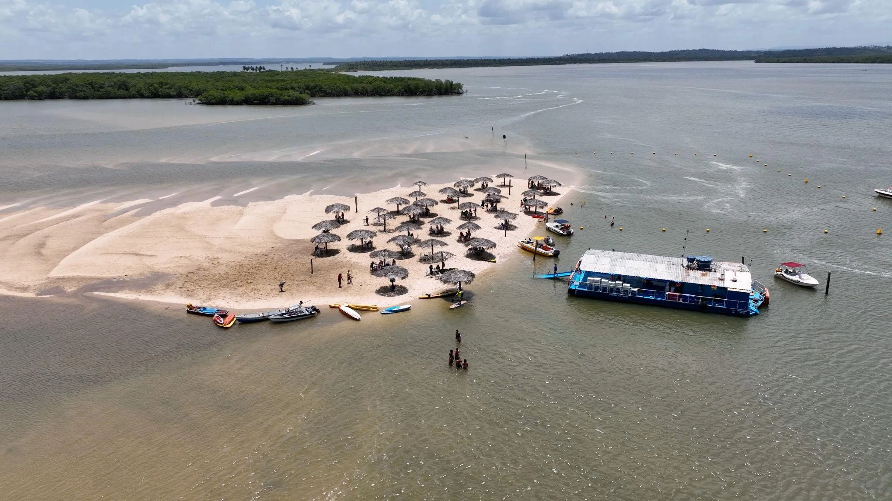
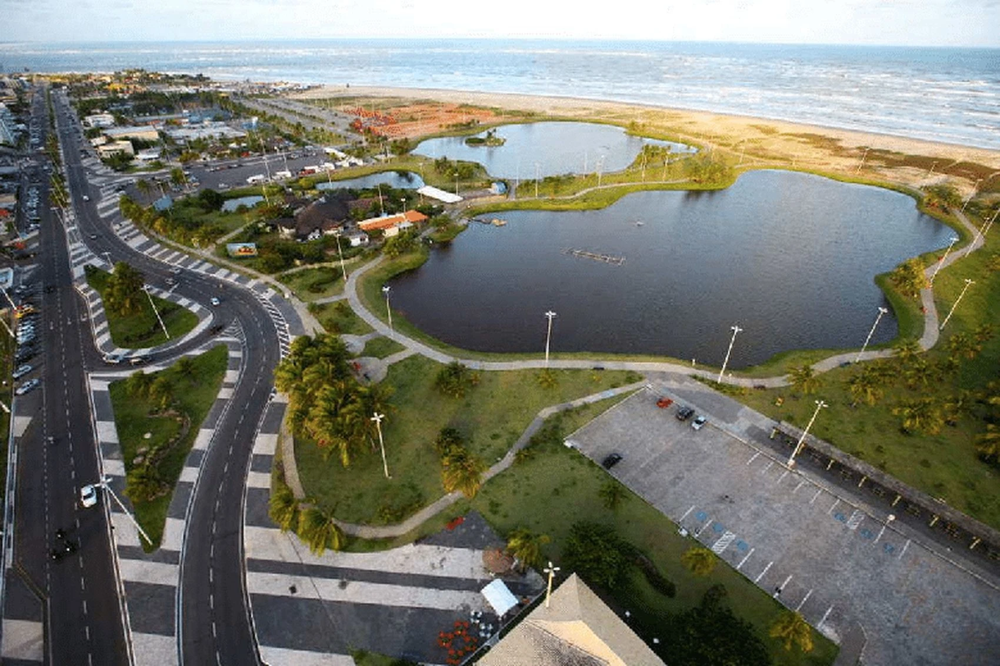
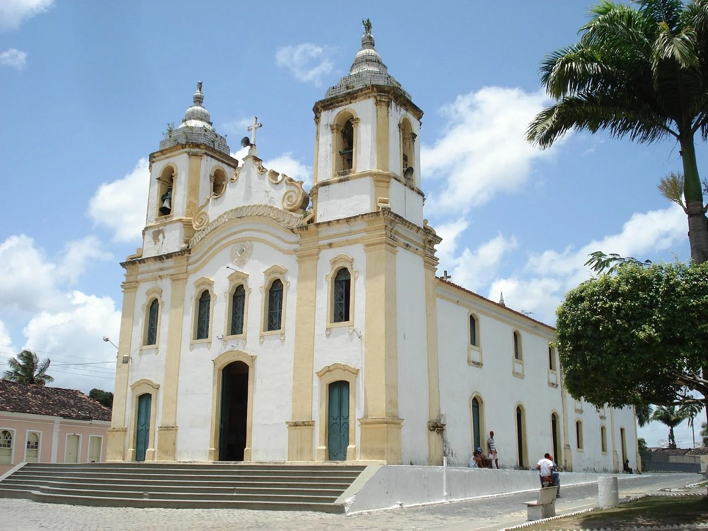
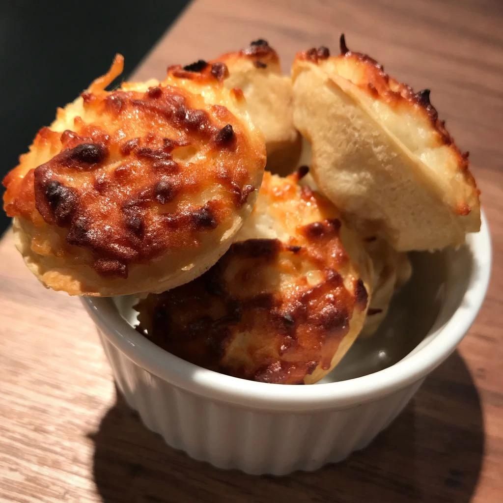
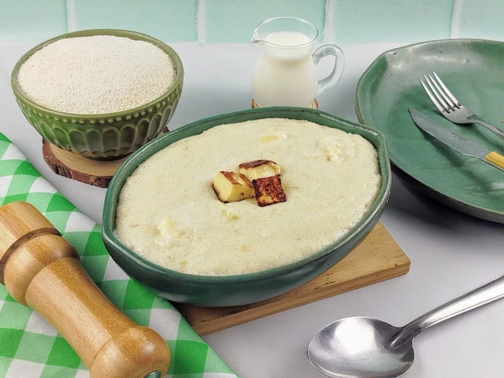

Capital
Aracaju
Conheça destinos, culturas, sabores e paisagens de todas as regiões
brasileiras.
Destinos, culturas e paisagens
incríveis te esperam.
Sergipe é o menor estado do Brasil em extensão territorial, localizado na Região Nordeste. Conhecido por suas belas praias, rica cultura popular e gastronomia baseada em frutos do mar, o estado oferece atrações históricas, naturais e culturais. Sua capital, Aracaju, destaca-se pela qualidade de vida e pela orla moderna

Aracaju
Aproximadamente 21.938,188 km²
Cerca de 2.210.000 habitantes
Nordeste

Banco de areia localizado entre rios e manguezais próximo a Aracaju. Durante a maré baixa, forma uma pequena ilha temporária muito procurada para passeios de barco e lazer em meio à natureza.

Principal cartão-postal de Aracaju, possui extensa área de lazer, ciclovias, quadras esportivas, lagos artificiais e a famosa Passarela do Caranguejo

A cidade de São Cristóvão abriga a Praça São Francisco, reconhecida como Patrimônio Mundial pela UNESCO, reunindo importantes construções coloniais.

Doce típico de Sergipe feito com queijo, coco, açúcar e ovos. Tem sabor marcante e é muito tradicional em festas e eventos culturais do estado.
.webp)
Preparada com peixe fresco, leite de coco, azeite de dendê e temperos típicos, é um dos pratos mais representativos do litoral sergipano.

Receita tradicional feita com leite, farinha de mandioca e manteiga, geralmente servida como acompanhamento de carnes e frutos do mar.
Predominam os climas tropical úmido no litoral e semiárido no interior. As temperaturas médias variam entre 24°C e 32°C durante boa parte do ano. Os meses mais secos costumam ser ideais para atividades ao ar livre.
Predominam os climas tropical úmido no litoral e semiárido no interior. As temperaturas médias variam entre 24°C e 32°C durante boa parte do ano. Os meses mais secos costumam ser ideais para atividades ao ar livre.
Litoral: Para praias, gastronomia e passeios turísticos. Vale do São Francisco: Para conhecer o Cânion do Xingó. São Cristóvão: Para turismo histórico e cultural. Aracaju: Para infraestrutura, lazer e vida noturna.
Litoral: Para praias, gastronomia e passeios turísticos. Vale do São Francisco: Para conhecer o Cânion do Xingó. São Cristóvão: Para turismo histórico e cultural. Aracaju: Para infraestrutura, lazer e vida noturna.
Prove tapiocas, moquecas, caranguejada e doces regionais feitos com coco.
Prove tapiocas, moquecas, caranguejada e doces regionais feitos com coco.